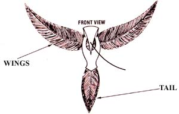
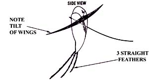

And here's yet another "make it in mere minutes" flier!
In hardly any time, and with a little help from your feathered friends, you can make a lightweight kite ... one that may not fly high, but will fly very well. This tiny toy is attractive, but it's also quite simple to assemble ... since the body is plastic foam, and each wing is a feather.
Start by cutting a polystyrene foam ball in half, and then carving one section into the shape of a bird's body (you can follow the design in the drawing or make your own, as long as it's symmetrical).
Next, stroll on out to the chicken coop (or duck pond) and gather some feathers. You'll need three or more tail plumes-all straight, none too long-and two fairly large wing feathers ... get one from a left and one from a right wing, though (they'll curve in opposite directions), or your kite will be a whirly bird!
Now, insert the wing feathers into the body at the angle shown in the drawing. The outer sides of the feathers should face forward, and they also need to tilt slightly upward so they'll catch the wind and lift the bird. Do not glue anything together yet, however. Instead, stick the tail feathers in place and give your kite a first test flight by dropping it from arm's length. If it spins, the wings need to be adjusted or maybe even replaced. If it takes a nose dive, add more tail feathers. When it floats smoothly ... you've got it and can glue the feathers in position and decorate your bird.
The best string for your kite will be thread(on a fairly full spool) inserted, with a needle, completely through the body and knotted on the other side. Finding the correct point of entry is mostly a matter of trial and error. So needle up and take your first stab at dead center. If-after a little wing twisting-you find that the critter just doesn't fly right, you'll have to run the string through again at another point. (You may even need to connect a center thread from the wing tips ... if so, make it four times the length of the wings and tie it, at its midpoint, to the main thread.)
Then put your spool on a stick (a thin pencil or chopstick does fine), head out into the spring breeze, and let your feather-light kite stretch its wings!
|
 |
 |
|